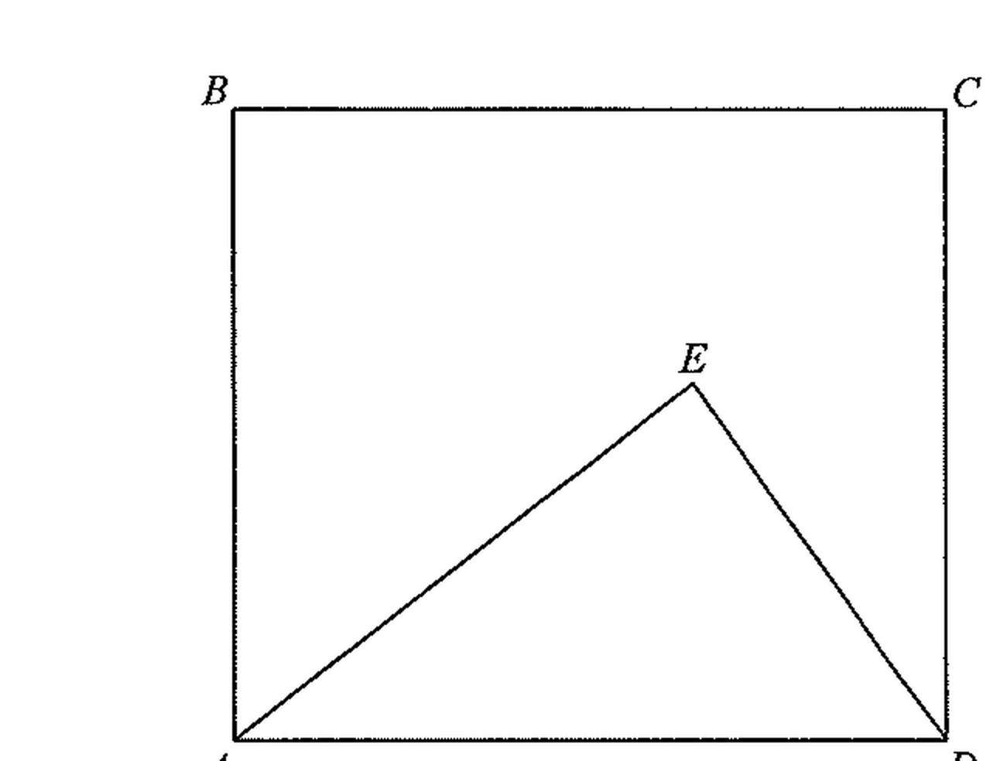
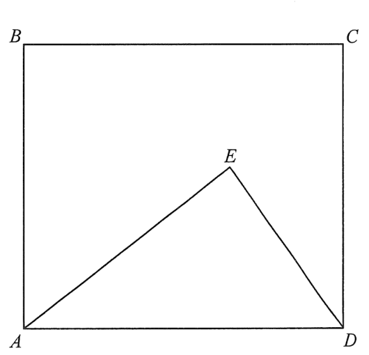

2025 DSE 數學 Paper 2 第 21 題 答案＋詳解＋答對率 58%
官方答案
B
歷年考生答對率：58%（官方統計）
題目（中文卷）
圖中，$ABCD$ 為一長方形。已知 $AE=20\text{ cm}$ 及 $\angle AED=90^\circ$。若 $\triangle ADE$ 的面積為 $150\text{ cm}^2$，則由 $E$ 至 $CD$ 的垂直距離為

- A. $8\text{ cm}$。
- B. $9\text{ cm}$。
- C. $12\text{ cm}$。
- D. $15\text{ cm}$。
English version（英文卷題目）
In the figure, $ABCD$ is a rectangle. It is given that $AE = 20 \text{ cm}$ and $\angle AED = 90^\circ$. If the area of $\triangle ADE$ is $150 \text{ cm}^2$, then the perpendicular distance from $E$ to $CD$ is

- A. $8 \text{ cm}$.
- B. $9 \text{ cm}$.
- C. $12 \text{ cm}$.
- D. $15 \text{ cm}$.
官方題解 / 評卷參考
答案：B
- $\angle AED=90^\circ$，故 $[ADE]=\dfrac12\cdot AE\cdot ED=150\Rightarrow ED=\dfrac{300}{20}=15$。
- $AD=\sqrt{AE^2+ED^2}=\sqrt{400+225}=25$，即長方形的闊。
- 設 $E$ 在 $BC$ 上、$AB=w$，$E(w,y)$：$w^2+y^2=400$ 及 $w^2+(25-y)^2=225$。
- 兩式相減：$y^2-(25-y)^2=175\Rightarrow 50y-625=175\Rightarrow y=16$。
- $E$ 至 $CD$ 的垂直距離 $=25-16=9\ \text{cm}$。
錯項分析：
- A. 解出 $y=17$（相減時把 $50y-625=175$ 算成 $50y=850$），得 $25-17=8$。
- C. 把長方形的長 $AB=12$ 當成所求距離（混淆了水平與垂直方向）。
- D. 把 $ED=15$ 當成 $E$ 到 $CD$ 的垂直距離。